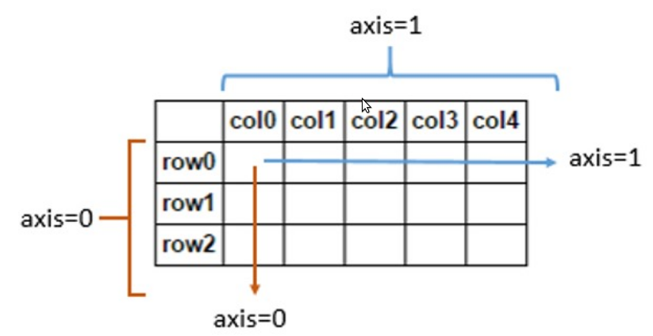

conda The following packages are not available from current channels:
conda config --append channels conda-forge
It tells conda to also look on the conda-forge channel when you search for packages.
conda 创建环境
conda create -n xception_net python==3.6.5 numpy==1.17.4 scipy==1.3.3 h5py==2.10.0 Keras==2.3.1 tensorflow-gpu==1.15.0
As the comment at the top indicates, the output of
conda list -e > requirements.txt
can be used to create a conda virtual environment with
conda create --name <env> --file requirements.txt
cudnn_status_internal_error tensorflow
You can try Allowing GPU memory growth with:
import tensorflow as tf
gpu = tf.config.experimental.list_physical_devices('GPU')
tf.config.experimental.set_memory_growth(gpu[0], True)
vscode activate conda env
{
"ros.distro": "melodic",
"python.autoComplete.extraPaths": [
"/home/pmjd/Disk/anaconda3/envs/wjj/lib/python3.6/site-packages"
],
"python.terminal.activateEnvInCurrentTerminal": true,
"python.condaPath": "/home/pmjd/Disk/anaconda3/bin/conda",
"python.defaultInterpreterPath": "/home/pmjd/Disk/anaconda3/envs/wjj/bin/python"
}
NameError: name 'xrange' is not defined
try:
# Python 2
xrange
except NameError:
# Python 3, xrange is now named range
xrange = range
TensorFlow ValueError: Cannot feed value of shape (64, 64, 3) for Tensor u'Placeholder:0', which has shape '(?, 64, 64, 3)'
image has a shape of (64,64,3).
Your input placeholder _x have a shape of (?, 64,64,3).
The problem is that you're feeding the placeholder with a value of a different shape.
You have to feed it with a value of (1, 64, 64, 3) = a batch of 1 image.
Just reshape your image value to a batch with size one.
np.expand_dims(img, axis=0)
opencv conda
pip install opencv-python
opencv is not compatible with python 3. I had to install opencv3 for python 3. The marked answer in how could we install opencv on anaconda? explains how to install opencv(3) for anaconda:
Run the following command:
conda install -c https://conda.binstar.org/menpo opencv
I realized that opencv3 is also available now, run the following command:
conda install -c https://conda.binstar.org/menpo opencv3
Edit on Aug 18, 2016: You may like to add the "menpo" channel permanently by:
conda config --add channels menpo
And then opencv can be installed by:
conda install opencv (or opencv3)
Edit on Aug 14, 2017: "clinicalgraphics" channel provides relatively newer vtk version for very recent python3
conda install -c clinicalgraphics vtk
Edit on April 16, 2020 (based on @AMC's comment): OpenCV can be installed through conda-forge (details see here)
conda install -c conda-forge opencv
pointcloud2 to array
def pointcloud2_to_array(cloud_msg, squeeze=True):
dtype_list = fields_to_dtype(cloud_msg.fields, cloud_msg.point_step)
cloud_arr = np.fromstring(cloud_msg.data, dtype_list)
cloud_arr = cloud_arr[
[fname for fname, _type in dtype_list if not (fname[:len(DUMMY_FIELD_PREFIX)] == DUMMY_FIELD_PREFIX)]]
if squeeze and cloud_msg.height == 1:
return np.reshape(cloud_arr, (cloud_msg.width,))
else:
return np.reshape(cloud_arr, (cloud_msg.height, cloud_msg.width))
read pcd to array
import numpy as np
import open3d as o3d
pcd = o3d.io.read_point_cloud("pointcloud_path.pcd")
out_arr = np.asarray(pcd.points)
print ("output array from input list : ", out_arr)
kitti 数据集下载
- 图片下载
https://s3.eu-central-1.amazonaws.com/avg-kitti/data_object_image_2.zip
- 点云下载
https://s3.eu-central-1.amazonaws.com/avg-kitti/data_object_velodyne.zip
- 标签下载
https://s3.eu-central-1.amazonaws.com/avg-kitti/data_object_label_2.zip
- 矫正文件下载
https://s3.eu-central-1.amazonaws.com/avg-kitti/data_object_calib.zip
python "//" operator
In python 2.x
>>> 10/3
3
>>> # To get a floating point number from integer division:
>>> 10.0/3
3.3333333333333335
>>> float(10)/3
3.3333333333333335
In python 3.x
>>> 10/3
3.3333333333333335
>>> 10//3
3
python super()
内置的super()返回一个代理对象（超类的临时对象),该代理对象允许我们访问基类的方法。在python中，super()有两个主要用例：
- 让我们避免显示使用基类名称
- 处理多重继承\
示例１：具有单继承的super()
在单继承的情况下，它允许我们通过引用基类super()
class Mammal(object):
def __init__(self, mammalName):
print(mammalName, 'is a warm-blooded animal.')
class Dog(Mammal):
def __init__(self):
print('Dog has four legs.')
super().__init__('Dog')
d1 = Dog()
输出
Dog has four legs.
Dog is a warm-blooded animal.
该super()内建返回一个代理对象，替代对象，可以通过委托调用基类的方法，这称为“间接"(使用引用基础对象的能力super()) 由于间接是在运行时计算的，因此我们可以在不同的时间使用不同的基类（如果需要）
示例２：具有多重继承的super()
class Animal:
def __init__(self, Animal):
print(Animal, 'is an animal.');
class Mammal(Animal):
def __init__(self, mammalName):
print(mammalName, 'is a warm-blooded animal.')
super().__init__(mammalName)
class NonWingedMammal(Mammal):
def __init__(self, NonWingedMammal):
print(NonWingedMammal, "can't fly.")
super().__init__(NonWingedMammal)
class NonMarineMammal(Mammal):
def __init__(self, NonMarineMammal):
print(NonMarineMammal, "can't swim.")
super().__init__(NonMarineMammal)
class Dog(NonMarineMammal, NonWingedMammal):
def __init__(self):
print('Dog has 4 legs.');
super().__init__('Dog')
d = Dog()
print('')
bat = NonMarineMammal('Bat')
输出
Dog has 4 legs.
Dog can't swim.
Dog can't flay.
Dog is a warm-blooded animal.
Dog is an animal.
Bat can't swim.
Bat is a warm-blooded animal.
Bat is an animal.
Method Resolution Order方法解析顺序 (MRO)
>>> Dog.__mro__
(<class 'Dog'>,
<class 'NonMarineMammal'>,
<class 'NonWingedMammal'>,
<class 'Mammal'>,
<class 'Animal'>,
<class 'object'>)
Split method in python is outputing an index error
one of your lines must be empty
deque in python ｐｙｔｈｏｎ中的双端队列
# Python code to demonstrate deque
from collections import deque
# Declaring deque
queue = deque(['name','age','DOB'])
print(queue)
=========================================================
Output:
deque(['name', 'age', 'DOB'])
- append() :- This function is used to insert the value in its argument to the right end of deque.
- appendleft() :- This function is used to insert the value in its argument to the left end of deque.
- pop() :- This function is used to delete an argument from the right end of deque.
- popleft() :- This function is used to delete an argument from the left end of deque.
- index(ele, beg, end) :- This function returns the first index of the value mentioned in arguments, starting searching from beg till end index.
- insert(i, a) :- This function inserts the value mentioned in arguments(a) at index(i) specified in arguments.
- remove() :- This function removes the first occurrence of value mentioned in arguments.
- extend(iterable) :- This function is used to add multiple values at the right end of deque. The argument passed is an iterable.
- extendleft(iterable) :- This function is used to add multiple values at the left end of deque. The argument passed is an iterable. Order is reversed as a result of left appends.
- reverse() :- This function is used to reverse order of deque elements.
- rotate() :- This function rotates the deque by the number specified in arguments. If the number specified is negative, rotation occurs to left. Else rotation is to right.
python random.sample()

python pip 不能用
PIP_NO_CACHE_DIR=off pip install gym
num.linspace() in Python
import numpy as np
print("B\n", np.linspace(2.0, 3.0, num=5, retstep=True),"\n")
x = np.linspace(0, 2, 10)
print("A\n", np.sin(x))
Output
B
(array([ 2. , 2.25, 2.5 , 2.75, 3. ]), 0.25)
A
[ 0. 0.22039774 0.42995636 0.6183698 0.77637192 0.8961922
0.9719379 0.99988386 0.9786557 0.90929743]
pip 下载提速
国内源： 新版ubuntu要求使用https源，要注意。 清华：https://pypi.tuna.tsinghua.edu.cn/simple 阿里云：http://mirrors.aliyun.com/pypi/simple 中国科技大学 https://pypi.mirrors.ustc.edu.cn/simple 华中理工大学：http://pypi.hustunique.com 山东理工大学：http://pypi.sdutlinux.org 豆瓣：http://pypi.douban.com/simple 临时使用： 可以在使用pip的时候加参数 pip install -i https://pypi.tuna.tsinghua.edu.cn/simple
-i http://mirrors.aliyun.com/pypi/simple --trusted-host mirrors.aliyun.com
PIL.Image转换成OpenCV格式
import cv2
from PIL import Image
import numpy
image = Image.open("plane.jpg")
image.show()
img = cv2.cvtColor(numpy.asarray(image),cv2.COLOR_RGB2BGR)
cv2.imshow("OpenCV",img)
cv2.waitKey()
OpenCV转换成PIL.Image格式
import cv2
from PIL import Image
import numpy
img = cv2.imread("plane.jpg")
cv2.imshow("OpenCV",img)
image = Image.fromarray(cv2.cvtColor(img,cv2.COLOR_BGR2RGB))
image.show()
cv2.waitKey()
添加python路径
xport PYTHONPATH=$PYTHONPATH:/home/dell/Deep/DeepSpeech/training
Numpy
numpy.amax()

numpy.argmax
numpy.argmax(a, axis=None, out=None)[source]Returns the indices of the maximum values along an axis.parameters\
- a: array_like,Input array.
- axis:int, optional, By default, the index is into the flattened array, otherwise along the specified axis.
- outarray, optional, If provided, the result will be inserted into this array. It should be of the appropriate shape and dtype.
Returns index_array:ndarray of ints Array of indices into the array. It has the same shape as a.shape with the dimension along axis removed.


np.squeeze
Function
Remove dimensions of size 1 from ndarray
You can use numpy.squeeze() to remove all dimensions of size 1 from the NumPy array ndarray. squeeze() is also provided as a method of ndarray.
import numpy as np
a = np.arange(6).reshape(1, 2, 1, 3, 1)
print(a)
# [[[[[0]
# [1]
# [2]]]
#
#
# [[[3]
# [4]
# [5]]]]]
print(a.shape)
# (1, 2, 1, 3, 1)
a_s = np.squeeze(a)
print(a_s)
# [[0 1 2]
# [3 4 5]]
print(a_s.shape)
# (2, 3)
By default, all dimensions with size 1 are removed, as in the example above.
You can specify the index of the dimension to be removed in the second argument axis of numpy.squeeze(). Dimensions that are not the specified index are not removed.
print(a.shape)
# (1, 2, 1, 3, 1)
print(np.squeeze(a, 0))
# [[[[0]
# [1]
# [2]]]
#
#
# [[[3]
# [4]
# [5]]]]
print(np.squeeze(a, 0).shape)
# (2, 1, 3, 1)
An error will occur if you specify a dimension whose size is not 1 or a dimension that does not exist.
axis can also be specified as a negative value. -1corresponds to the last dimension and can be specified by the position from the back.
print(np.squeeze(a, -1))
# [[[[0 1 2]]
#
# [[3 4 5]]]]
print(np.squeeze(a, -1).shape)
# (1, 2, 1, 3)
print(np.squeeze(a, -3))
# [[[[0]
# [1]
# [2]]
#
# [[3]
# [4]
# [5]]]]
print(np.squeeze(a, -3).shape)
# (1, 2, 3, 1)
提取文件和不同格式文件
# Get all filenames in the dataroot
filenames = os.listdir(dataset_root)
filenames = [_ for _ in filenames if _.endswith(".h5")]#提取h5文件
根据文件名继续提取文件
ver1_ori = ["front", "back"]
filenames = [_ for _ in filenames if os.path.splitext(_)[0].split("_")[-1] in ver1_ori]
确保文件名不为
assert len(filenames) > 0
返回完整路径
# Add to full data path
filenames_original = [os.path.join(dataset_root, _) for _ in filenames]
查看是否属于已知类
# Check modalities
avail_modality = ["rgb", "rgbd"]
if not modality in avail_modality:
raise ValueError("[Error] Unsupported modality. Consider ", avail_modality)
.pkl file
Your pkl file is, in fact, a serialized pickle file, which means it has been dumped using Python's pickle module.
import pickle
with open('serialized.pkl', 'rb') as f:
data = pickle.load(f)
Note gzip is only needed if the file is compressed:
import gzip
import pickle
with gzip.open('mnist.pkl.gz', 'rb') as f:
train_set, valid_set, test_set = pickle.load(f)
Where each set can be further divided (i.e. for the training set):
train_x, train_y = train_set
If you want to display the dataset
import matplotlib.cm as cm
import matplotlib.pyplot as plt
plt.imshow(train_x[0].reshape((28, 28)), cmap=cm.Greys_r)
plt.show()
判断文件是否存在
if not os.path.exists(datapoint):
raise ValueError("[Error] File does not exist.")
h5 file Open
In order to open a HDF5 file with the h5py module you can use h5py.File(filename).
import h5py
filename = "vstoxx_data_31032014.h5"
h5 = h5py.File(filename,'r')
futures_data = h5['futures_data'] # VSTOXX futures data
options_data = h5['options_data'] # VSTOXX call option data
h5.close()
numpy.random.uniform
we can get the random samples from uniform distribution and returns the random samples as numpy array by using this method.
# import numpy
import numpy as np
import matplotlib.pyplot as plt
# Using uniform() method
gfg = np.random.uniform(2.1, 5.5, 1000)
plt.hist(gfg, bins = 100, density = True)
plt.show()
isinstance()
The isinstance() function returns True if the specified object is of the specified type, otherwise False.
| Parameter | Description |
|---|---|
| object | Required, An Object |
| type | A type or class, or a tuple of types and/or classes |
判断图像格式
def _is_pil_image(img):
if accimage is not None:
return isinstance(img, (Image.Image, accimage.Image))
else:
return isinstance(img, Image.Image)
PIL图像亮度调整
def adjust_brightness(img, brightness_factor):
"""Adjust brightness of an Image.
Args:
img (PIL Image): PIL Image to be adjusted.
brightness_factor (float): How much to adjust the brightness. Can be
any non negative number. 0 gives a black image, 1 gives the
original image while 2 increases the brightness by a factor of 2.
Returns:
PIL Image: Brightness adjusted image.
"""
if not _is_pil_image(img):
raise TypeError('img should be PIL Image. Got {}'.format(type(img)))
enhancer = ImageEnhance.Brightness(img)
img = enhancer.enhance(brightness_factor)
return img
Contrast adjusted image
def adjust_contrast(img, contrast_factor):
"""Adjust contrast of an Image.
Args:
img (PIL Image): PIL Image to be adjusted.
contrast_factor (float): How much to adjust the contrast. Can be any
non negative number. 0 gives a solid gray image, 1 gives the
original image while 2 increases the contrast by a factor of 2.
Returns:
PIL Image: Contrast adjusted image.
"""
if not _is_pil_image(img):
raise TypeError('img should be PIL Image. Got {}'.format(type(img)))
enhancer = ImageEnhance.Contrast(img)
img = enhancer.enhance(contrast_factor)
return img
Saturation adjusted image
def adjust_saturation(img, saturation_factor):
"""Adjust color saturation of an image.
Args:
img (PIL Image): PIL Image to be adjusted.
saturation_factor (float): How much to adjust the saturation. 0 will
give a black and white image, 1 will give the original image while
2 will enhance the saturation by a factor of 2.
Returns:
PIL Image: Saturation adjusted image.
"""
if not _is_pil_image(img):
raise TypeError('img should be PIL Image. Got {}'.format(type(img)))
enhancer = ImageEnhance.Color(img)
img = enhancer.enhance(saturation_factor)
return img
Hue adjusted image
def adjust_hue(img, hue_factor):
"""Adjust hue of an image.
The image hue is adjusted by converting the image to HSV and
cyclically shifting the intensities in the hue channel (H).
The image is then converted back to original image mode.
`hue_factor` is the amount of shift in H channel and must be in the
interval `[-0.5, 0.5]`.
See https://en.wikipedia.org/wiki/Hue for more details on Hue.
Args:
img (PIL Image): PIL Image to be adjusted.
hue_factor (float): How much to shift the hue channel. Should be in
[-0.5, 0.5]. 0.5 and -0.5 give complete reversal of hue channel in
HSV space in positive and negative direction respectively.
0 means no shift. Therefore, both -0.5 and 0.5 will give an image
with complementary colors while 0 gives the original image.
Returns:
PIL Image: Hue adjusted image.
"""
if not(-0.5 <= hue_factor <= 0.5):
raise ValueError('hue_factor is not in [-0.5, 0.5].'.format(hue_factor))
if not _is_pil_image(img):
raise TypeError('img should be PIL Image. Got {}'.format(type(img)))
input_mode = img.mode
if input_mode in {'L', '1', 'I', 'F'}:
return img
h, s, v = img.convert('HSV').split()
np_h = np.array(h, dtype=np.uint8)
# uint8 addition take cares of rotation across boundaries
with np.errstate(over='ignore'):
np_h += np.uint8(hue_factor * 255)
h = Image.fromarray(np_h, 'L')
img = Image.merge('HSV', (h, s, v)).convert(input_mode)
return img
Adjust gamma on IMG
def adjust_gamma(img, gamma, gain=1):
"""Perform gamma correction on an image.
Also known as Power Law Transform. Intensities in RGB mode are adjusted
based on the following equation:
I_out = 255 * gain * ((I_in / 255) ** gamma)
See https://en.wikipedia.org/wiki/Gamma_correction for more details.
Args:
img (PIL Image): PIL Image to be adjusted.
gamma (float): Non negative real number. gamma larger than 1 make the
shadows darker, while gamma smaller than 1 make dark regions
lighter.
gain (float): The constant multiplier.
"""
if not _is_pil_image(img):
raise TypeError('img should be PIL Image. Got {}'.format(type(img)))
if gamma < 0:
raise ValueError('Gamma should be a non-negative real number')
input_mode = img.mode
img = img.convert('RGB')
np_img = np.array(img, dtype=np.float32)
np_img = 255 * gain * ((np_img / 255) ** gamma)
np_img = np.uint8(np.clip(np_img, 0, 255))
img = Image.fromarray(np_img, 'RGB').convert(input_mode)
return img
np.clip(img, 0, 255)
Given an interval, values outside the interval are clipped to the interval edges. For example, if an interval of [0, 1] is specified, values smaller than 0 become 0, and values larger than 1 become 1.
Convert np.ndarray img to tensor
class ToTensor(object):
"""Convert a ``numpy.ndarray`` to tensor.
Converts a numpy.ndarray (H x W x C) to a torch.FloatTensor of shape (C x H x W).
"""
def __call__(self, img):
"""Convert a ``numpy.ndarray`` to tensor.
Args:
img (numpy.ndarray): Image to be converted to tensor.
Returns:
Tensor: Converted image.
"""
if not(_is_numpy_image(img)):
raise TypeError('img should be ndarray. Got {}'.format(type(img)))
if isinstance(img, np.ndarray):
# handle numpy array
if img.ndim == 3:
img = torch.from_numpy(img.transpose((2, 0, 1)).copy())
elif img.ndim == 2:
img = torch.from_numpy(img.copy())
else:
raise RuntimeError('img should be ndarray with 2 or 3 dimensions. Got {}'.format(img.ndim))
# backward compatibility
# return img.float().div(255)
return img.float()
math.floor
Round numbers down to the nearest integer
#Import math library
import math
# Round numbers down to the nearest integer
print(math.floor(0.6))
print(math.floor(1.4))
print(math.floor(5.3))
print(math.floor(-5.3))
print(math.floor(22.6))
print(math.floor(10.0))
# 0
# 1
# 5
# -6
# 22
# 10
unsqueeze
If you look at the shape of the array before and after, you see that before it was (4,) and after it is (1, 4) (when second parameter is 0) and (4, 1) (when second parameter is 1). So a 1 was inserted in the shape of the array at axis 0 or 1, depending on the value of the second parameter.
That is opposite of np.squeeze() (nomenclature borrowed from MATLAB) which removes axes of size 1 (singletons).
>>> x = torch.tensor([1, 2, 3, 4])
>>> torch.unsqueeze(x, 0)
tensor([[ 1, 2, 3, 4]])
>>> torch.unsqueeze(x, 1)
tensor([[ 1],
[ 2],
[ 3],
[ 4]])
np.transpose
The transpose() function is used to permute置换 the dimensions of an array.
import numpy as np
a = np.ones((2,3,4))
print(a.shape)
print("--------------------------------")
print(np.transpose(a,(2,0,1)).shape)
print("--------------------------------")
print(np.transpose(a,(2,1,0)).shape)
# (2, 3, 4)
# --------------------------------
# (4, 2, 3)
# --------------------------------
# (4, 3, 2)
# transpose里的 0代表第一维案例中是2， 1代表第二维案例中是3， 2代表第三维案例中是4.
What does axis=0 do in Numpy's sum function

a = np.array([[1, 2, 3], [4, 5, 6]])
np.sum(a, axis = 0)
# result array([5, 7, 9])
a = np.array([1, 2, 3])
np.sum(a, axis = 0)
#result 6
Pad the points to 512
num_points = points.shape[0]
target_size = 512
output_points = np.repeat(points[-1, :][None, ...], target_size, axis=0)
output_points[:num_points, :] = points
output_labels = np.repeat(labels[-1, :][None, ...], target_size, axis=0)
output_labels[:num_points, :] = labels
numpy.random.shuffle()
With the help of numpy.random.shuffle() method, we can get the random positioning of different integer values in the numpy array or we can say that all the values in an array will be shuffled randomly.
OrderedDict
An OrderedDict is a dictionary subclass that remembers the order that keys were first inserted.
Image to Array & Array to Image
from PIL import Image
import numpy as np
im = Image.open('1.jpg')
im2arr = np.array(im) # im2arr.shape: height x width x channel
arr2im = Image.fromarray(im2arr)
pyton thread
import threading
class SubscribeThread(threading.Thread):
def __init__(self):
threading.Thread.__init__(self)
def callback(self,data):
rospy.loginfo(rospy.get_caller_id() + "I heard %s", data.data)
def run(self):
rospy.Subscriber("image_button", String, self.callback)
rospy.spin()
subscribe_thread = SubscribeThread()
subscribe_thread.setDaemon(True)
subscribe_thread.start()
python wheel arm
np.sum
numpy.sum(a, axis=None, dtype=None, out=None, keepdims=<no value>, initial=<no value>, where=<no value> )
Sum of array elements over a given axis.
Parameters:
a: array_like
Elements to sum.
axis: None or int or tuple of ints, optional
Axis or axes along which a sum is performed. The default , axis=None, will sum all of the elements of the input array. If axis is negative it counts from the last to the first axis.
If axis is a tuple of ints, a sum is performed on all of the axes specified in the tuple instead of a single axis or all the axes as before.
dtype:dtype, optional
The type of the the returned array and of the accumulator in which the elements are summed.The dtype of $a$ is used by default, unless $a$ has an integer dtype of less precision than the default platform integer. In that case, if $a$ is signed then the platform integer is used while if $a$ is unsigned then an unsigned integer of the same precision as the platform integer is used.
out:ndarray, optional
Alternative output array in which to place the result. It must have the same shape as the expected output, but the type of
UMat
fmat = frame.get().astype('uint8')
fmat = fmat[648-360:648+360, 1152 - 640:1152+640]
frame = cv2.UMat(fmat)
等价于
frame = cv2.UMat(frame, [648-360,648+360], [1152 - 640,1152+640])
TypeError: slice indices must be integers or None or have an index method
意思就是该为整数未为整数，由于除法/自动产生的类型是浮点型，因此出现上述错误，修正方法为，将/更改为//
img=np.hstack((a[:,0:100/2],b[:,100/2,:]))
改为
img=np.hstack((a[:,0:100//2],b[:,100//2,:]))
Can 通信
pip install python-can
import can
bustype = 'socketcan'
channel = 'can0'
bus = can.interface.Bus(channel=channel, bustype=bustype)
msg = can.Message(arbitration_id=0x08020102, data=[0, 0, 0, 0, 0, 0, 1, 0], is_extended_id=True)
bus.send(msg)
串口通信
import serial
#端口，GNU / Linux上的/ dev / ttyUSB0 等 或 Windows上的 COM3 等
portx="/dev/ttyTHS0"
#波特率，标准值之一：50,75,110,134,150,200,300,600,1200,1800,2400,4800,9600,19200,38400,57600,115200
bps=115200
#超时设置,None：永远等待操作，0为立即返回请求结果，其他值为等待超时时间(单位为秒）
timex=5
# 打开串口，并得到串口对象
ser=serial.Serial(portx,bps,timeout=timex)
input = "您好,我是小蒙"
serial_input = input.encode("gbk")
s = b'\x5A\xA5'
s += (len(serial_input)+5).to_bytes(1, 'big')
s += b'\x82\x40\x00'
s += serial_input
s += b'\xff\xff'
#print("s = ", s)
#ss = b'\x5a\xa5\x0d\x82\xc4\xfa\xba\xc3,\xce\xd2\xca\xc7\xd0\xa1\xc3\xc9\xff\xff'
#sss = b'\x5a\xa5\x0f\x82\x40\x00\xc8\xcb\xc1\xb3\xca\xb6\xb1\xf0\xd6\xd0\xff\xff'
#print("sss = " , sss)
#show = bytes([0x5A,0xA5,0x0f,0x82,0x40,0x00,0xc8,0xcb,0xc1,0xb3,0xca,0xb6,0xb1,0xf0,0xd6,0xd0,0xff,0xff])
#ssss = b'Z\xa5\x0f\x82@\x00\xc8\xcb\xc1\xb3\xca\xb6\xb1\xf0\xd6\xd0\xff\xff'
#print("show =", show)
input = b'\x5A\xA5\x07\x82\x00\x84\x5A\x01\x00\x01' # 切换到识别界面
input2= bytes([0x5A,0xA5,0x07,0x82,0x00,0x84,0x5A,0x01,0x00,0x01])
ser.write(input2)
show_clear = bytes([0x5A,0xA5,0x05,0x82,0x31,0x00,0xff,0xff])
#ser.write(show_clear)
ser.write(s)
show_blue = bytes([0x5A,0xA5,0x05,0x82,0x40,0xe3,0x1f,0x1f])
#ser.write(show_blue)
show_face = bytes([0x5A,0xA5,0x05,0x82,0x10,0x00,0x00,0x02])
#ser.write(show_face)
ser.close()
next()函數 和iter() 函數
我們首先要知道什麼是可迭代對象iterable, 即可以用for循環的對象和迭代器iterator
一類：list, tuple, dict, set, str
二類：generator, 包含生成器和帶yield 的generate function
而生成器不僅可以用於for，還可以被next（）函數不斷調用並返回下一個值，可以被next（）函數不斷返回下一個值的對象稱爲迭代器：iterator
生成器都是iterator對象,但 list, dict， str是 iterable， 但不是iterator， 要把list, dict, str, 等iterable轉換爲iterator可以使用iter() 函數
next() 用法
next(iterator[,default])
- iterator ——可迭代對象
- default ——可選，用於設置在沒有下一個元素返回時該返回的默認值
>>> list = [1,2,3,4,5]
>>> it = iter(list)
>>> next(it,'-1')
1
>>> next(it,'-1')
2
>>> next(it,'-1')
3
>>> next(it,'-1')
4
>>> next(it,'-1')
5
>>> next(it,'-1')
-1